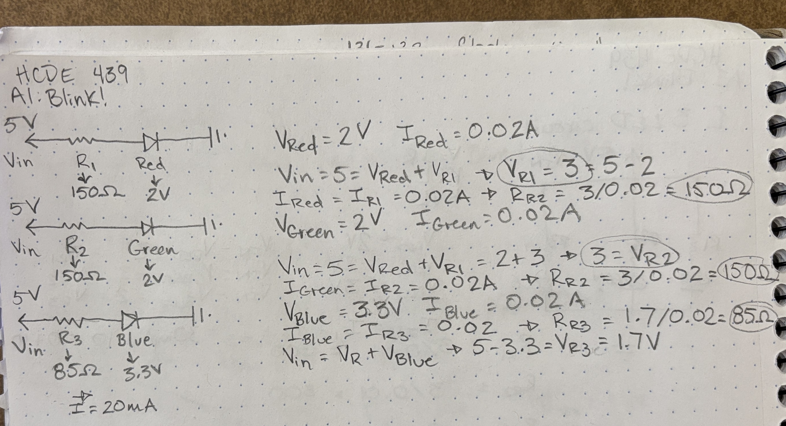
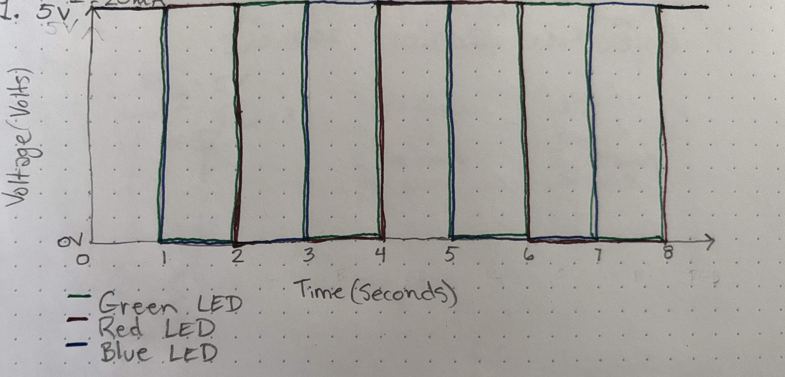

Here is all the documentation for assignment 1!

I made a diagram for each circuit and calculated the resistor values.

I used 100 ohm resistors in series with each LED. I calculated the red and green LEDs to need 150 ohm resistors and the blue LED to need a 85 ohm resistors. I did not have a 150 ohm or 85 ohm resistors so I used a 100 ohm resistor which still keeps the current within safe limits.
//Establishes RED as the variable name for pin 13 int RED = 13; //Establishes GREEN as the variable name for pin 12 int GREEN = 12; //Establishes BLUE as the variable name for pin 8 int BLUE = 8; //Code run only once when the arduino is first powered on void setup() { //Establishes pin 13 (RED) as an output pinMode(RED, OUTPUT); //Establishes pin 12 (GREEN) as an output pinMode(GREEN, OUTPUT); //Establishes pin 8 (BLUE) as an output pinMode(BLUE, OUTPUT); } // the loop function runs over and over again forever while arduino is powered on void loop() { // change state of the red LED to on by setting the pin to the HIGH voltage level digitalWrite(RED, HIGH); // change state of the blue LED to on by setting the pin to the HIGH voltage level digitalWrite(BLUE, HIGH); // change state of the green LED to on by setting the pin to the HIGH voltage level digitalWrite(GREEN, HIGH); //waits 1 second so all three LED appear lit for 1 second delay(1000); // change state of the blue LED to off by setting the pin to the LOW voltage level digitalWrite(BLUE, LOW); // change state of the green LED to off by setting the pin to the LOW voltage level digitalWrite(GREEN, LOW); //waits 1 second so only the red LED appears lit for 1 second delay(1000); // change state of the red LED to off by setting the pin to the LOW voltage level digitalWrite(RED, LOW); // change state of the green LED to on by setting the pin to the HIGH voltage level digitalWrite(GREEN, HIGH); //waits 1 second so only the green LED appears lit for 1 second delay(1000); // change state of the blue LED to on by setting the pin to the HIGH voltage level digitalWrite(BLUE, HIGH); // change state of the green LED to off by setting the pin to the LOW voltage level digitalWrite(GREEN, LOW); //waits 1 second so only the blue LED appears lit for 1 second delay(1000); }


2. In this type of setup you could independently blink 13 LEDs because there are 13 pins on the Arduino. The amount of current drawn by 13 independently blinking LEDs would be 260 mA total if each were drawing 20 mA. However, with more resistance this number could be decreased. 3. At about 100 flashes per second the LED no longer appears to be flickering.